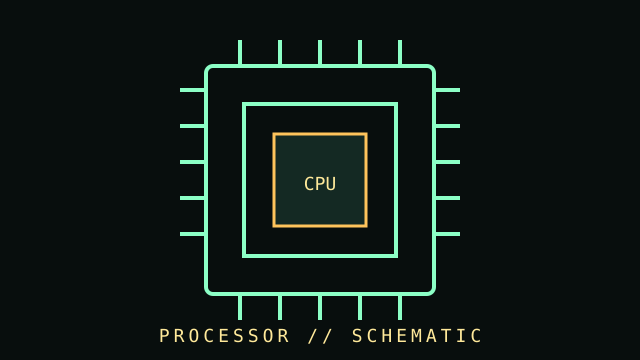

[ VENDOR DIRECTORY // 3 FILES // 139 PART RECORDS ]
Browse CPUs by vendor
Top-level taxonomy is vendor-first. Open a vendor to browse individually cataloged parts, then drill into model records.
VENDOR FILE // 75 PART RECORDSIntel processors
Desktop, mobile, workstation, and embedded Intel CPU records.
OPEN VENDOR DIRECTORY →VENDOR FILE // 50 PART RECORDSAMD processorsAMD K5/K6 through Zen generations with model-specific records.
OPEN VENDOR DIRECTORY →VENDOR FILE // 14 PART RECORDSOther processor vendors and architecturesNon-Intel/AMD and mixed-vendor historical processor records.
OPEN VENDOR DIRECTORY →[ COMPONENT RECORD // CENTRAL PROCESSING ]
Central
processors.
A CPU executes instructions and coordinates work across cores, caches, memory controllers, and I/O. Product names alone are not enough to establish compatibility or performance.

CLASS RECORD: desktop and workstation CPUs. Specifications are model-specific; clock rate alone is not a useful comparison of different architectures.
Reference specifications
| Architecture | Instruction set and microarchitecture are separate terms. x86-64 and Arm are major ISA families; implementation features differ by vendor and generation. |
|---|---|
| Package/socket | Physical package and socket must match the motherboard, and the board firmware must support the exact processor stepping/model. |
| Compute | Core/thread counts, base/boost behavior, cache hierarchy, supported instruction extensions, and power limits vary by SKU and workload. |
| Memory & graphics | Memory type/channels/speed and integrated GPU support are processor-specific; board topology and firmware can impose additional limits. |
| Thermals | Use the maker's specified thermal design/power limits and temperature guidance. Sustained package power can differ from a nominal TDP number. |
Installation & diagnosis
- Check socket, chipset, board CPU list, BIOS minimum, memory generation, and cooler mount before buying.
- Handle the package by its edges; avoid touching contacts. On socketed boards, inspect pins/contacts carefully and never force alignment.
- Use a suitable cooler and fresh thermal interface material. Confirm fan/pump connection and temperature response during first boot.
- Diagnose instability with default memory and power settings first; verify firmware, cooling, and memory compatibility before assuming CPU failure.
- Static electricity, contamination, bent contacts, excessive mounting force, or uneven cooler pressure can damage a system.
Sources & further reading
- Intel ARK — Product specificationsOfficial model-level Intel CPU product records and support details.
- AMD — Processor specificationsOfficial AMD processor family and model specifications.
- AMD — Support and documentationDrivers, manuals, and product documentation; use the CPU/board vendor's compatibility list.